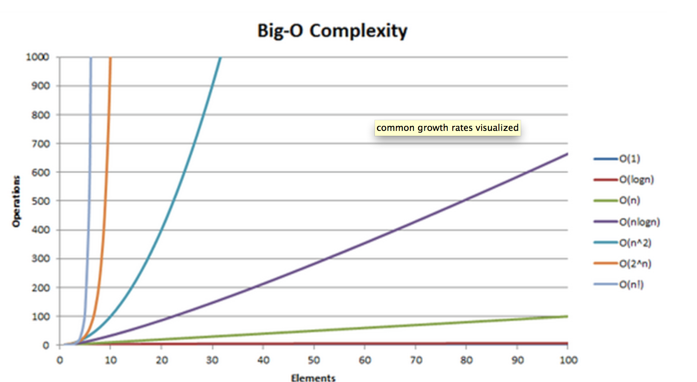

What is it?
One of the lectures that I attended today at DBC had to do with Big O analysis. The main idea of Big O is based upon measuring different algorithm performances. Algorithm performances depend upon a range from the "worst-case"(which is Big O) to the "best-case"(Big-Omega). This range exists because algorithms are simplified to limit the time it takes to run.
There are two main dimensions to consider when we talk about the performance of an algorithm, time and space. For example, an algorithm can perform quickly may take more memory, while an algorithm that performs more slowly may take less memory.
There are three types of growth rates that algorithms mimic: linear, log(n) and exponential. In terms of big data size, log(n) is quickest, then linear, then exponential. Usually these growth rates are visualized on a graph of number of operations by the size of the data as seen below.
Search functions
To model two growth rates, let's study two functions that search a sorted array for an object.
Function A is a basic linear search, going through an array systematically checking each element in the array against the prized object. As we expand the number of elements in the array, we would see a linear graph going diagonally across the graph.
Function B is a binary search that finds the element in the middle of the array and compares it to the object. If the element is smaller, then a new middle is created with the previous element being the ceiling of the new array. If the element is larger, then the previous element becomes the floor of the new array. In any case, we would see a log function in this growth model. If we were to compare the two, Function B would be much quicker than A.
